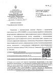
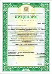
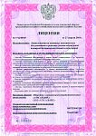
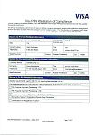
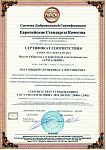
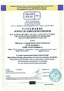

О компании АТМ Альянс
Компания в цифрах
Существующий блокО компании
Существующий текстАТМ АЛЬЯНС - международная торгово-промышленная группа, специализируется на продаже и комплексном сервисном обслуживании кассового, банковского и технологического оборудования. Более чем за 17 лет работы компания зарекомендовала себя как надежный партнер многих крупных российских и зарубежных банков. На сегодняшний день компания имеет в штате более 1500 инженеров и более 700 тысяч объектов на обслуживании в России и за рубежом.
Компания АТМ АЛЬЯНС предлагает следующие виды услуг:
- Сервисное обслуживание банкоматов;
- Ремонт и обслуживание POS-терминалов;
- Ремонт кассового оборудования;
- Грузоперевозка / установка / складское хранение банкоматов и сейфов;
- Клининг банкоматов;
- Оценка ущерба от вандализма;
- Утилизация оборудования.
Осуществляет продажу товаров:
- Онлайн-кассы;
- Фискальные накопители;
- POS-терминалы;
- Банкоматы;
- Комплектующие для банкоматов;
- Термолента;
- Счетчики банкнот;
- Детекторы банкнот;
- Сканеры;
- Весы;
- Мониторы;
- PIN-клавиатуры;
- Принтеры;
- Денежные ящики;
- Ридеры;
- Расходные материалы и аксессуары.
Компания АТМ АЛЬЯНС основана в 2008 году и на начальном этапе занималась поставками банковского оборудования (банкоматы, POS-терминалы, комплектующие) из Европы, Индии, Америки, Китая. Затем, кроме поставок самого оборудования, собственники сосредоточились на развитии филиальной сети аутсорсинга банковских устройств самообслуживания сначала на территории Уральского федерального округа, затем Дальнего Востока. В последующие годы компания уверенными темпами набирала обороты, росло количество контрактов и проектов, численность сотрудников становилась все больше. В 2015 году было принято решение перенести головной офис компании в Москву и начать освоение европейской части России.
В том же, 2016 году, в связи с внесением изменений в 54 Федеральный закон о применении контрольно-кассовой техники, участники рынка начали готовиться к последовательному, массовому переходу на современное и соответствующее законодательству кассовое оборудование. В 2016 году компания принимает важное решение по созданию подразделения по продажам онлайн-касс и POS-терминалов. Спустя три года товарная линейка была расширена до исчерпывающего перечня банковского оборудования.
В процессе развития компании АТМ АЛЬЯНС возникла необходимость в реорганизации её структуры и преобразования в холдинг.
На текущий момент по объему выручки группа компаний АТМ АЛЬЯНС входит в ТОП-5 компаний - поставщиков банковского оборудования в стране. Компания работает на территории России и зарубежья, имеет 66 структурных подразделений, более 1800 человек штатной численности.
Компания в цифрах
17 Опыт в обслуживаниибанковского оборудования более 17 лет 75 Офисов
по России 6 Стран
присутствия 85 Обслуживаем все
регионы России 700000 Объектов на обслуживании 7 Сервисная поддержка по любым вопросам
7 дней в неделю 5000 Заявок
выполняем ежедневно
История
Новый блок: вехиГруппа компаний
Новый блок: структураАТМ Альянс
Поставка и сервис банковского и кассового оборудования, 75 офисов
Боровская Бумажная Компания
Завод чековой термоленты и термоэтикетки, Тюмень
АТМ Софт
Service Desk для инженеров, реестр российского ПО
Направления
Роботы-уборщики, LED-плёнки и медиакубы, заправка картриджей
Лицензии и сертификаты
Новый блок: документы
Осуществление деятельности по разработке, производству, распространению шифровальных (криптографических) средств, информ

Сбор, транспортирование, обработка, утилизация, обезвреживание, размещение отходов I - IV классов опасности

Деятельность по монтажу, техническому обслуживанию и ремонту средств обеспечения пожарной безопасности зданий и сооружен

This form is used by the Security Assessor ("SA") as an attestation of the Program Participant's complaince status with

Сертификат соответствия № РОСС RU.C.04ФАЛ.МУ.0021 удостоверяет: менеджмент услуг организации применительно к услугам в о

Сертификат соответствия № РОСС RU.ОШ01.ОС09.СМК.00188 удостоверяет: Система менеджмента качества применительно к продаже
Руководство
Новый блок: командаКлиенты и партнёры
Новый блок: логотипы


Нужен поставщик или сервис оборудования?
Опишите задачу: подберём оборудование или предложим договор на обслуживание. Ответ в течение рабочего дня.
Оставить заявку